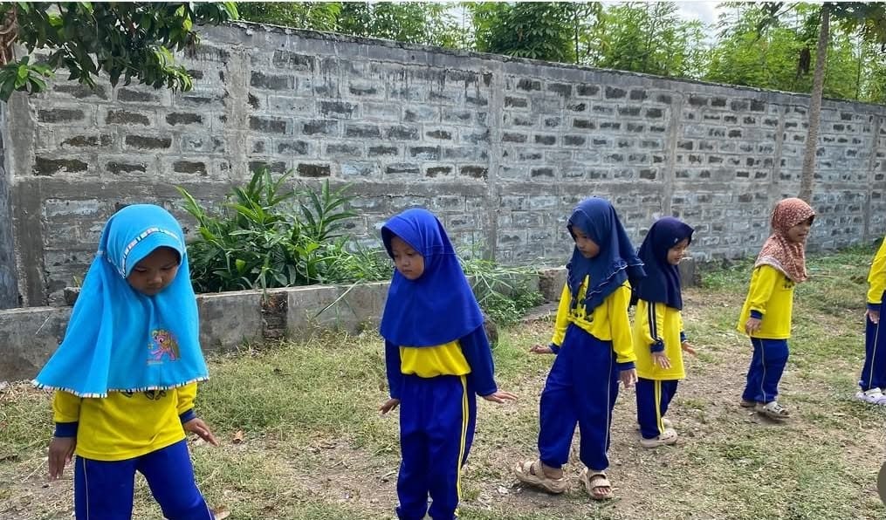

Literasi Dini Bukan Calistung: Cerita Guru Muda PAUD di Tasikmalaya

Ada orang tua di Tasikmalaya yang memasukkan anaknya ke PAUD, lalu menambahkan les calistung di luar sekolah. Alasannya bukan karena anak tertinggal, melainkan cemas: begitu masuk SD, anak langsung dites membaca, menulis, dan berhitung.
Kecemasan itu masih sering dijumpai Salsa Majma, mahasiswa PGMI yang membantu di PAUD Kober Al Ittihad Tasikmalaya, sebagai operator sekaligus guru pendamping. Bagi Salsa, justru di usia ini anak tidak perlu dipaksa bisa calistung.
Dari Membantu Umi, Lalu Meneruskan
Semuanya bermula dari hal sederhana. Salsa mulanya hanya membantu uminya yang sudah lebih dulu berkiprah di PAUD. Ia sendiri tidak menyangka akan sejauh ini. Namun makin lama, ia sadar harus lebih terjun dan meneruskan PAUD itu, dan itu bukan karena terpaksa.
Kini ia lebih banyak mengurus administrasi sebagai operator, sesekali turun menjadi guru pendamping. Yang membuatnya betah adalah anak-anak. “Senakal-nakalnya mereka, nakalnya lucu,” katanya. Saat suasana hati sedang buruk, bermain bersama mereka membuatnya yang tadinya pura-pura happy menjadi happy beneran.
Cemas yang Sebenarnya Tidak Perlu
Kecemasan orang tua tadi sebenarnya tidak punya dasar aturan. Permendikdasmen Nomor 3 Tahun 2025 menyatakan calon murid kelas 1 SD tidak dipersyaratkan mengikuti tes membaca, menulis, berhitung, maupun bentuk tes lain (Pasal 11 ayat 5). Dari sisi PAUD, Salsa menegaskan hal serupa: calistung belum dituntut dan belum menjadi prioritas. Yang lebih dulu diutamakan adalah kemampuan dasar, seperti memegang pensil, membedakan huruf, serta membuat garis, bulatan, dan garis miring.
Syukurlah, belum ada orang tua yang sampai memaksa. Meski begitu, kekhawatiran itu tetap terasa, dan Salsa memilih menghadapinya dengan tenang, sambil ngobrol biasa.
Pondasinya Motorik, Bukan Hafalan
Kuncinya, menurut Salsa, ada pada motorik anak. Jika motoriknya belum baik, tulisan tidak akan rapi. Anak mungkin hafal bahwa itu huruf A, tetapi belum tahu cara membuat garis miring dan “topi”-nya. Karena itu, anak perlu sering dilatih, baik di sekolah maupun di rumah.
Pengamatan ini sejalan dengan penelitian. Rohmah dkk. (2025) menemukan bahwa stimulasi motorik halus, seperti meronce, menjiplak, dan menyusun benda kecil, meningkatkan kemampuan menulis permulaan pada 30 anak usia 4-5 tahun. Skalanya memang kecil, tetapi arahnya sama dengan yang Salsa lihat di kelas.
Bila Dipaksa, Anak Bisa Takut Belajar
Lalu apa yang terjadi kalau anak dipaksa? Salsa mengingatkan bahwa anak usia 4 sampai 5,5 tahun masih kuat merekam apa yang dialaminya. Bila ia dimarahi saat belajar, ia bisa menangkapnya secara keliru: belajar identik dengan rasa takut. Dampaknya bisa terbawa sampai SD, berupa anak yang murung, bahkan trauma.
Kajian pustaka Sikma dkk. (2024) memberi peringatan serupa. Tuntutan calistung yang tidak sesuai dengan pendekatan pendidikan anak usia dini berisiko memicu stres akademik, yang tampak sebagai menangis, menolak ikut kegiatan, hingga perilaku agresif.
Belajar yang Terasa Seperti Bermain
Lantas bagaimana mengenalkan literasi tanpa membuat anak tertekan? Jawabannya, lewat hal-hal yang akrab bagi anak. Literasi di usia dini bukan sekadar bisa membaca, melainkan tumbuh dari pengalaman sederhana yang menyenangkan.
Di PAUD tempat Salsa membantu, lagu jadi andalan, mulai dari nama-nama hari, alfabet, sampai angka. Lagu “A ayam, B bebek, C cicak, D domba” membuat anak berirama sendiri meski tanpa musik. Untuk berhitung, mereka memakai benda nyata seperti kerikil, balok, dan tutup botol: ada induk bebek dengan anak-anaknya, lalu satu anak hilang, tinggal berapa? Tutup botol berhuruf dan berwarna juga dipakai. Anak diminta mengambil huruf B, atau lima tutup warna merah, sehingga mereka belajar huruf, warna, dan hitungan sekaligus.
Bahan-bahannya tidak harus mahal. Selain stik, boneka tangan, dan kardus bekas, Salsa kadang membuat adonan dari aci dan terigu, atau kolase dari daun kering dan biji-bijian.
Anak yang Akhirnya Bisa Menulis A
Pendekatan seperti inilah yang membantunya menghadapi anak yang sulit menulis. Salah satu pengalaman paling berkesan adalah seorang anak yang sangat sulit diminta menulis. Salsa lalu memberinya lembar kerja berisi sketsa huruf A besar. Di luar dugaan, anak itu betah. Ia mewarnai sambil bertanya, “Bu, ini huruf A ya? Garisnya miring ya?”
Berikutnya ia diberi sketsa huruf A sampai C yang lebih kecil, dan anak itu menyelesaikannya. Beberapa hari kemudian, ia berkata, “Bu, aku bisa loh bikin huruf A.” Ia menulisnya hanya dengan pensil, tanpa sketsa.
Menenangkan Orang Tua dengan Fakta
Tentu tidak semua orang tua bisa langsung tenang. Ketika ada yang cemas, Salsa memilih mendengarkan dulu, kadang lewat WhatsApp, kadang bertemu langsung sambil berbagi cerita ringan. Setelah itu ia menunjukkan fakta: hasil karya anak yang ditempel atau diarsip, serta video anak yang sedang mengaji, membaca, atau menulis. Ia menyampaikan perkembangan yang sudah terlihat, misalnya anak sudah bisa menggunting, rapi, teliti, dan sabar. Jika di rumah anak tampak belum bisa, bisa jadi suasana hatinya sedang kurang baik saat belajar bersama orang tua.
Yang Bisa Dilakukan Orang Tua di Rumah
Lalu apa yang bisa dilakukan orang tua? Salsa punya beberapa saran sederhana.
- Tanyakan hal yang menyenangkan dulu saat menjemput. Misalnya, “Tadi di sekolah nemu apa saja? Main sama siapa?” Setelah itu baru, “Tadi nulis apa, coba lihat.”
- Ulangi di rumah dengan cara yang baik. “Di sekolah itu menanam, di rumah itu menyiram,” katanya. Sesuaikan dengan kemampuan anak.
- Latih motorik lewat kegiatan sederhana, seperti bermain plastisin, menempel, atau menggunting.
- PR secukupnya. Salsa tidak memberi PR setiap hari, hanya jika anak perlu mengulang materi tertentu.
Harapan untuk PAUD di Tasikmalaya
Pada akhirnya, harapan Salsa sederhana: guru dan orang tua saling mengerti. Ketika guru sudah mengajar di sekolah, orang tua juga tahu perannya di rumah, dan tidak menyalahkan sekolah dari satu sisi saja. Ia juga berharap guru PAUD makin sabar dan mendapat lebih banyak pelatihan menghadapi anak usia dini, termasuk melatih motorik.
Alasannya praktis. Anak yang di PAUD belum mengenal huruf bisa tertinggal di SD, karena satu kelas hanya dipegang satu wali kelas, sedangkan di PAUD anak dipegang beberapa guru. “Kasihan nanti di SD-nya,” katanya. Karena itu, ia berharap guru dan orang tua berjalan bersama: yang satu menanam, yang lain menyiram.
Oleh: Alawiyah Mutmainnah
Daftar Pustaka
Majma, S. (2026, Oktober). Wawancara melalui pesan suara WhatsApp [Wawancara pribadi].
Peraturan Menteri Pendidikan Dasar dan Menengah Nomor 3 Tahun 2025 tentang Sistem Penerimaan Murid Baru.
Rohmah, F. N., Ramdani, L. A., & Fitri, A. W. (2025). Pengaruh stimulus motorik halus terhadap kemampuan menulis permulaan pada anak usia 4-5 tahun. Jurnal Bahusacca: Jurnal Pendidikan Dasar dan Manajemen Pendidikan, 6(2), 135-142. jurnal.radenwijaya.ac.id
Sikma, M., Nst, N., Suhartika, S., & Putra, R. T. (2024). Dampak pembelajaran calistung dalam pendidikan anak usia dini terhadap resiko stres akademik pada anak. Jurnal Pendidikan Tambusai, 8, 27023-27029. jptam.org